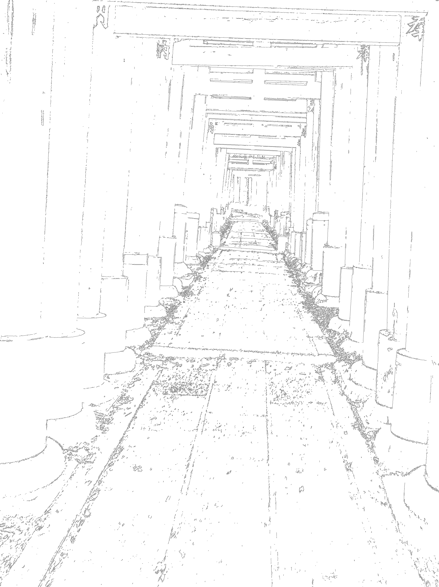

ポートフォリオ風にしたい紹介ページ

リンク
https://twitter.com/red_rice_goma
https://github.com/sekihan02
https://sekihan02.github.io/
作成してみたページ
1個目：https://github.com/sekihan02/First_play_page
2個目：anime.jsで作成した30秒動画(https://github.com/sekihan02/Coffe_break)